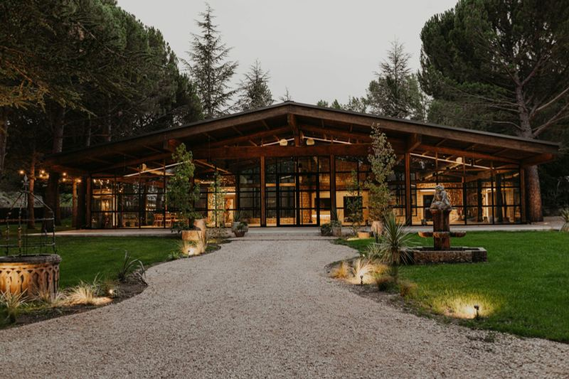
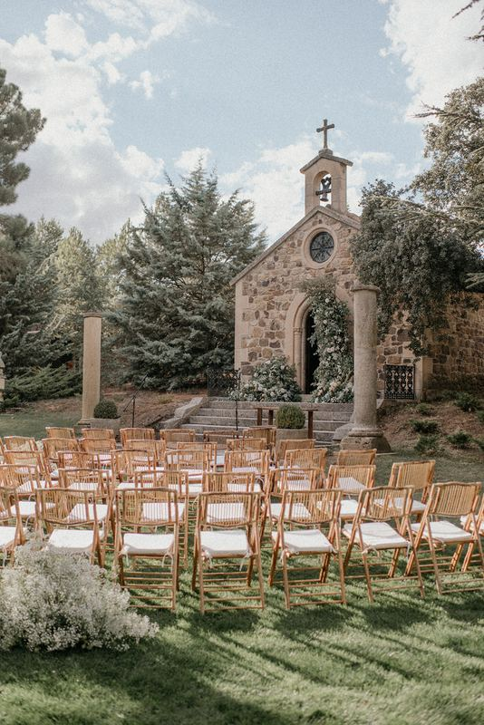
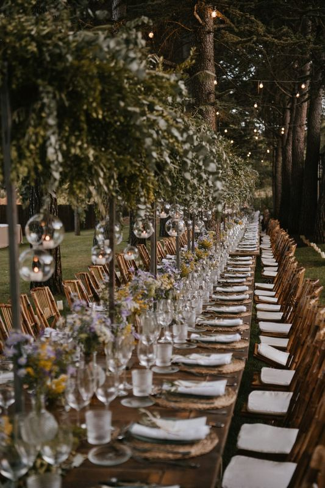
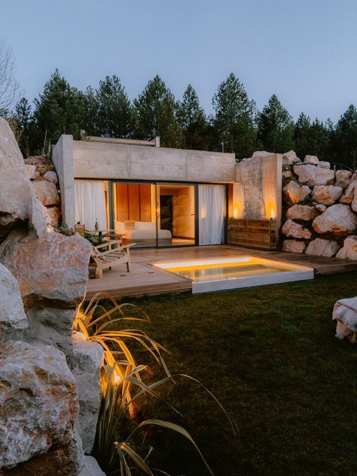

18:00
Ceremonia
Nos casamos. Ahora sí que sí.
Nos casamos
15 de mayo de 2027 · Finca San Marcos · Soria
Después de tantos momentos juntos, ha llegado el momento de celebrar uno de los más importantes. Queremos rodearnos de nuestra familia y amigos para disfrutar, brindar y bailar juntos.
18:00
Finca San Marcos
Comida · Brindis · Fiesta
hasta que el cuerpo aguante
Todo empezó en Roma. Marta ya conocía la ciudad, pero para Carlos era territorio desconocido. Y aunque tenía claro que quería pedirle matrimonio allí, había una pregunta mucho más importante: ¿dónde escondía el anillo durante varios días sin que Marta se enterase?
Nada más pasar el control del aeropuerto, Carlos hizo lo que cualquier hombre del siglo XXI haría: preguntarle a ChatGPT si un anillo hace saltar un detector de metales. Respuesta: sí. Perfecto.
Primera misión: el Coliseo. Anillo escondido entre las tarjetas de la cartera y el móvil estratégicamente colocado encima. Marta pasó el control. Carlos pasó detrás. Ni un pitido. Misión cumplida… aunque el Coliseo estaba demasiado lleno para la pedida perfecta.
Por la noche probó suerte en la Fontana di Trevi. Mala idea: justo delante, otra pareja estaba haciendo una pedida rodeada de aplausos. Carlos decidió que aquello ya parecía demasiado sospechoso y guardó el anillo para otra ocasión.
Al día siguiente, después de un free tour por Roma, Marta y Carlos fueron al Foro Romano. Y, cómo no, otro detector de metales. Esta vez el camuflaje fue de nivel experto: cartera + anillo + móvil + cargador externo.
Pasaron el control, pero al guardar las cosas Marta se ofreció a ayudar. Agarró el cargador… y también el lacito de la caja del anillo. Hubo un pequeño forcejeo de manos. Carlos ganó. Marta no sospechó nada.
A esas alturas, Carlos ya estaba harto de detectores, turistas y de esperar el momento perfecto. Así que decidió que ese día era el día.
En el mirador del Palatino sacó el anillo y dijo:
“Marta, ha llegado el momento”.
Marta, que iba a lo suyo, entendió que tocaba irse. Se dio media vuelta… y siguió caminando.
Carlos se quedó plantado con el anillo en la mano y cara de “¿pero qué…?”. Así que tuvo que llamarla:
“Marta, vente pa'cá”.
Esta vez sí. Marta se dio la vuelta, Carlos se lo pidió y, después de dos días de detectores, calor, dolor de pies y mucha gente, por fin pudo respirar.
Marta dijo que sí. ❤️
Y así terminó la misión más complicada de aquel viaje… y Carlos pudo, por fin, disfrutar de Roma.

Nuestro gran día tendrá lugar en Finca San Marcos, en un entorno natural de 20.000 m² entre pinares y encinas, pensado para disfrutar de la celebración juntos.

Nos daremos el "sí quiero" al aire libre, frente a la Ermita San Marcos, rodeados de quienes más queremos.
Guarda energía, porque tenemos un día bastante completo.
Nos casamos. Ahora sí que sí.
Brindamos, picamos algo y empezamos a celebrarlo como toca.
Comida, risas y probablemente alguna que otra sorpresa.
Se acabó lo formal. Aquí empieza el verdadero peligro.

Cenaremos al aire libre, entre pinos y luces cálidas, con un menú preparado especialmente para la ocasión.

A tan solo 3 km del centro de Soria, en el mismo emplazamiento que la finca. Estas son las habitaciones disponibles para nuestra boda (precio por noche):
Lo que de verdad nos hace ilusión es celebrar este día rodeados de vosotros. Si aun así os apetece tener un detalle con nosotros, esta es nuestra forma preferida.
¡Por supuesto! Habrá menú infantil y espacio para que los más pequeños disfruten también.
Sí, Finca San Marcos cuenta con parking propio y personal encargado de organizarlo durante el evento.
Elegante. La ceremonia y el banquete son al aire libre, así que agradeceréis un calzado cómodo para pisar césped y grava.
Sí, habrá autobús organizado para quienes se alojen fuera de la finca. Os avisaremos de los horarios más adelante.
Recomendamos Noctis Hotel, en la propia finca — tenéis todas las opciones y precios en la sección de alojamiento de esta web.